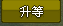
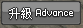
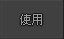

skip = [0, 1] def order(v): return v.y, v.x def level_up(): try: if find(): for i in findAll(): doubleClick(i) sleep(1) click() sleep(1) click() except: pass for x in range(10000): level_up() buttons = findAll() sort_buttons = sorted(buttons, key=order) for skill_index, skill_button in enumerate(sort_buttons): if skill_index not in skip: click(skill_button) sleep(3.5) type(Key.ESC)